В этом уроке мы познакомимся с делителями и кратными.
Содержание урока- Что такое делитель?
- Кратные числа
- Признаки делимости чисел
- Чётные и нечётные числа
- Простые и составные числа
- Разложение составного числа на простые множители
- Нахождение делителей числа
- Задания для самостоятельного решения
Что такое делитель?
Рассмотрим простой пример:
\[8 : 2 = 4\]
Видим, что число 8 разделилось на 2 без остатка. Говорят, что число 2 является делителем числа 8.
Рассмотрим еще примеры, когда одно число без остатка разделилось на другое.
Пример 1. Число 2 является делителем числа 8, поскольку 8 делится на 2 без остатка:
\[8 : 2 = 4\]
Пример 2. Число 3 является делителем числа 9, поскольку 9 делится на 3 без остатка:
\[9 : 3 = 3\]
Пример 3. Число 4 не является делителем числа 10 поскольку 10 не делится на 4 без остатка:
10 : 4 = 2 (2 в остатке)
Определение. Делителем числа а называется число, на которое число а делится без остатка.
Данное определение содержит переменную a. Подставим вместо этой переменной любое число, например число 12 и прочитаем определение:
Делителем числа 12 называется число, на которое 12 делится без остатка.
Попробуем перечислить эти числа:
1, 2, 3, 4, 6, 12
Все эти числа являются делителями числа 12, поскольку число 12 делится на них без остатка. Покажем это:
\[12 : 1 = 12 12 : 2 = 6 12 : 3 = 4 12 : 4 = 3 12 : 6 = 2 12 : 12 = 1\]
Кратные числа
Если какое-нибудь число без остатка разделилось на другое, то его называют кратным этого числа. Например, 6 без остатка делится на 3. Поэтому 6 является кратным числа 3
\[6 : 3 = 2\]
Определение. Кратным числа а называется число, которое делится без остатка на а.
Данное определение содержит переменную a. Подставим вместо этой переменной любое число, например число 5 и прочитаем определение:
Кратным числа 5 называется число, которое делится без остатка на 5.
У любого числа бесконечно много кратных. Например, первыми кратными числа 5, являются числа 5, 10, 15, 20, 25. Все они кратны 5, поскольку делятся на 5 без остатка:
\[5 : 5 = 1 10 : 5 = 2 15 : 5 = 3 20 : 5 = 4 25 : 5 = 5\]
Признаки делимости чисел
Признаки делимости позволяют быстро определить, делится ли одно число на другое без остатка, не выполняя самого деления.
Существует несколько признаков делимости, которые значительно упрощают вычисления и помогают быстрее решать задачи. Рассмотрим самые распространённые из них.
Признак делимости на 10
Любое число, которое оканчивается нулем, делится без остатка на 10. Чтобы разделить такое число на 10, достаточно отбросить последнюю цифру — ноль.
Например, 380 : 10 = 38. Мы просто отбросили последний ноль в числе 380.
В случае, если мы имеем выражение такого вида 385 : 10, то получится 38 и 5 в остатке, поскольку 380 : 10 = 38, а пятерка это остаток, который не разделился.
Таким образом, если число оканчивается цифрой 0, то оно делится на 10 без остатка.
Если число оканчивается любой другой цифрой, то на 10 без остатка оно не делится. В этом случае остаток равен последней цифре числа.
Например:
385 : 10 = 38 (остаток 5)
Остаток равен последней цифре числа 385, то есть цифре 5.
Признак делимости на 5 и на 2
Любое число, которое оканчивается нулем, делится без остатка и на 5, и на 2.
Примеры:
\[10 : 5 = 2\]
\[100 : 5 = 20\]
\[100 : 2 = 50\]
Признак делимости на 5
Если число оканчивается цифрой 0 или 5, то оно делится без остатка на 5.
Примеры:
\[355 : 5 = 71\]
\[200 : 5 = 40\]
\[475 : 5 = 95\]
Признак делимости на 3
Число делится на 3, если сумма цифр этого числа делится на 3. Например, рассмотрим число 27, сумма его цифр 2 + 7 = 9. Девять, как мы знаем делится на 3, значит и 27 делится на 3:
\[27 : 3 = 9\]
Признак делимости на 9
Число делится на 9, если сумма его цифр делится на 9. Например, рассмотрим число 18. Сумма его цифр 1 + 8 = 9. Девять делится на девять, значит и 18 делится на 9
\[18 : 9 = 2\]
Рассмотрим число 846. Сумма его цифр 8 + 4 + 6 = 18. Восемнадцать делится на девять, значит и 846 делится на 9. Выполним это деление уголком:
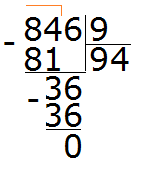
Чётные и нечётные числа
Чётное число — это число, которое делится на 2 без остатка.
Например, число 20 является чётным, потому что оно делится на 2 без остатка:
\[20 : 2 = 10\]
Нечётное число — это число, которое при делении на 2 даёт остаток 1.
Например, число 21 — нечётное:
21 : 2 = 10 (остаток 1)
Как определить, является число чётным или нечётным, не деля его на 2? Достаточно посмотреть на последнюю цифру числа.
Если последняя цифра — 0, 2, 4, 6 или 8, то число чётное.
Если последняя цифра — 1, 3, 5, 7 или 9, то число нечётное.
Например, число 308 чётно, поскольку оно оканчивается чётной цифрой. Число 1024 тоже чётно, поскольку оканчивается чётной цифрой.
А числа 305 и 1027 являются нечётными, поскольку они оканчиваются нечётными цифрами.
Простые и составные числа
Простое число — это число, которое делится без остатка только на единицу и само на себя. Иными словами, у простого числа всего два делителя: 1 и само число.
Например, число 5 делится без остатка на единицу и само на себя:
\[5 : 1 = 5\]
\[5 : 5 = 1\]
Составное число — это число, которое имеет более двух делителей.
Например, число 4 является составным, потому что оно делится без остатка на 1, 2 и 4. Следовательно, у него три делителя.
\[4 : 4 = 1\]
\[4 : 2 = 2\]
\[4 : 1 = 4\]
Разложение составного числа на простые множители
Любое составное число можно разложить на простые множители, то есть представить в виде произведения простых чисел.
Это похоже на замену в выражениях, которую мы изучали ранее. Мы узнали, что любое число в выражении можно заменить равным ему выражением, записанным в другой форме, при этом значение выражения не изменится.
Например, число 6 можно записать в виде суммы 4 + 2 или в виде частного 12 : 2 или в виде произведения 2 × 3. Последнюю запись 2 × 3 называют разложением числа 6 на простые множители, потому что числа 2 и 3 являются простыми, а их произведение равно 6.
Разложить число на простые множители — значит представить его в виде произведения простых чисел.
Разложим число 4 на простые множители. Для этого представим его в виде произведения простых чисел. Число 4 можно записать как 2 × 2. Число 2 является простым, поэтому множители 2 и 2 — простые множители числа 4. Следовательно, разложение числа 4 на простые множители имеет вид:
\[4 = 2 \times 2\]
Разложим число 6 на простые множители. Число 6 состоит из множителей 2 и 3, так как 6 = 2 × 3. Поскольку числа 2 и 3 простые, они являются простыми множителями числа 6
\[6 = 2 \times 3\]
Разложим на множители число 8. Это число можно разложить на множители 2 и 4, при этом множитель 4 можно разложить на два множителя: 2 и 2. Поэтому вместо четвёрки записываем её разложение:
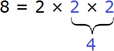
Большие числа раскладывают на простые множители по тому же принципу. Сначала число представляют в виде произведения нескольких множителей. Затем каждый составной множитель раскладывают дальше. Этот процесс продолжают до тех пор, пока все множители не станут простыми числами.
Например, разложим число 180 на простые множители. Число 180 это два множителя 18 и 10
\[180 = 18 \times 10\]
Множители 18 и 10 являются составными. Их тоже в свою очередь раскладываем на другие множители:
\[18 = 3 \times 6\]
\[10 = 5 \times 2\]
Теперь раскладываем выделенную синюю шестерку. Это последний составной множитель, который можно разложить на простые множители:
\[6 = 2 \times 3\]
Теперь собираем все простые множители вместе:
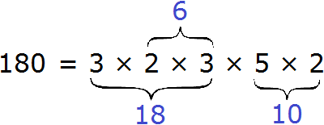
На множители можно разложить только составное число. Простое число на множители не раскладывается. Именно поэтому, когда разложение доходит до простых чисел, мы эти простые числа дальше не раскладываем.
Существует и второй способ разложения на простые множители. Он проще и удобен для больших чисел. Суть этого способа заключается в том, что сначала проводят вертикальную линию. Слева от неё записывают делимое, а справа — делитель. В результате получаются простые множители.
При разложении числа этим способом используют признаки делимости, например: на 2, на 3, на 5 и другие. Они помогают быстрее находить делители числа.
Рассмотрим пример: разложим число 180 на простые множители с помощью этого способа.
Проводим вертикальную линию и слева записываем первое делимое 180
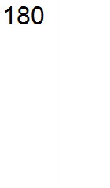
Теперь применяем признаки делимости. В первую очередь проверяем делится ли 180 на 2. Если делится, то нужно записать эту двойку справа от вертикальной линии.
180 делится на 2, поскольку 180 оканчивается нулём. Записываем двойку справа от вертикальной линии:
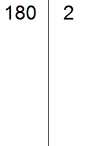
Теперь делим 180 на 2 и получаем второе делимое 90. Записываем это делимое слева от вертикальной линии:
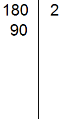
Теперь делим 90. Снова применяем признаки делимости. Проверяем делится ли 90 на 2.
90 делится на 2, поскольку 90 оканчивается нулём. Записываем двойку справа от вертикальной линии:
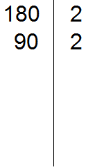
Теперь делим 90 на 2, получаем третье делимое 45. Записываем это делимое слева от вертикальной линии:
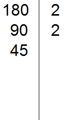
Теперь делим 45. Снова применяем признаки делимости. Проверяем делится ли 45 на 2.
45 на 2 не делится. Тогда проверяем делится ли 45 на 3.
45 делится на 3, поскольку сумма цифр 4 и 5 делится на 3. Записываем тройку справа от вертикальной линии:
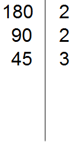
Делим 45 на 3, получаем четвёртое делимое 15. Записываем это делимое слева от вертикальной линии:
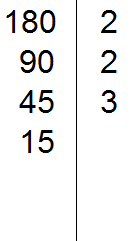
Теперь делим 15. Проверяем делится ли 15 на 2.
15 не делится на 2. Тогда проверяем делится ли 15 на 3.
15 на 3 делится, поскольку сумма цифр 1 и 5 делится на 3. Записываем тройку справа от вертикальной линии:
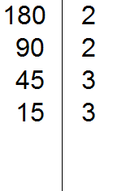
Делим 15 на 3, получаем пятое делимое 5. Записываем пятёрку слева от вертикальной линии:
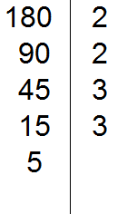
Теперь делим 5. Проверяем делится ли 5 на 2.
5 не делится на 2. Тогда проверяем делится ли 5 на 3.
5 не делится на 3. Тогда проверяем делится ли 5 на 5.
5 делится на 5. Записываем эту пятёрку справа от вертикальной линии:
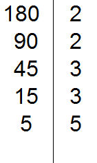
Делим 5 на 5, получаем шестое делимое 1. Записываем эту единицу слева от вертикальной линии:
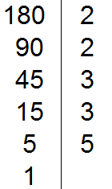
Деление на этом завершается, потому что мы получили единицу. Делители, которые записывают справа от вертикальной линии, должны быть простыми числами. Поэтому, когда число 5 не разделилось на 2 и затем не разделилось на 3, мы попробовали разделить его на 5, не проверяя деление на 4, так как 4 — не простое, а составное число.
Теперь переписываем в один ряд все делители, записанные справа от вертикальной линии. Это и будет разложением числа 180 на простые множители. Желательно записывать их, начиная с наименьших, чтобы расположить множители по возрастанию.
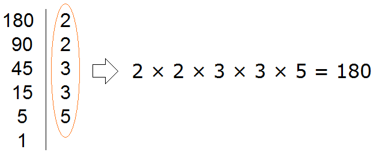
Не расстраивайтесь, если у вас будут трудности при разложении чисел на простые множители. Эта тема требует небольшой практики. Для тренировки попробуйте разложить на простые множители следующие числа: 256, 378, 512.
Нахождение делителей числа
В начале урока мы говорили, что делитель — это число, на которое другое число делится без остатка.
Например, число 2 является делителем числа 6, поскольку число 6 можно без остатка разделить на 2
\[6 : 2 = 3\]
Ещё делителем числа 6 является число 3
\[6 : 3 = 2\]
Ещё делителем числа 6 является число 1
\[6 : 1 = 6\]
Наконец, делителем числа 6 является само это число
\[6 : 6 = 1\]
Перечислим все делители числа 6
1, 2, 3, 6
Иногда возникает необходимость найти все делители числа. Чтобы понять, как это делается, рассмотрим несколько примеров.
Пример 1. Найти делители числа 12
Во-первых, единица является делителем любого числа. Пусть и у нас первым делителем числа 12 будет единица
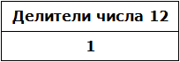
Теперь раскладываем число 12 на простые множители:
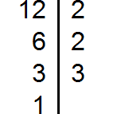
Получили разложение 2 × 2 × 3.
В процессе разложения числа 12 на простые множители, мы делили его на числа 2 и 3. На них число 12 разделилось без остатка, значит они тоже являются делителями числа 12. Внесём эти два числа в нашу таблицу делителей:
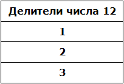
Чтобы получить остальные делители числа 12, нужно найти все возможные произведения его простых множителей между собой. Получаемые в результате ответы и будут остальными делителями числа 12.
Число 12 мы разложили на простые множители 2 × 2 × 3. Найдём все возможные произведения этих простых множителей между собой. Первое произведение это 2 × 2. Это произведение равно 4
\[2 \times 2 = 4\]
Занесём число 4 в нашу таблицу делителей
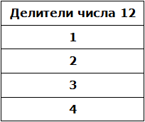
Следующее возможное произведение из простых множителей числа 12 это произведение 2 × 3. Данное произведение равно 6. Занесём число 6 в нашу таблицу делителей:
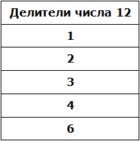
Последнее возможное произведение из простых множителей числа 12 это произведение из всех его множителей, а именно 2 × 2 × 3. Это произведение равно 12. Занесём число 12 в нашу таблицу делителей:
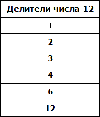
Таким образом, делителями числа 12 являются числа 1, 2, 3, 4, 6, 12.
На основании приведённого примера можно сформировать правило для нахождения делителей числа:
Чтобы найти делители числа, нужно:
- записать в качестве первого делителя единицу;
- разложить исходное число на простые множители и выписать из полученных простых множителей те множители, которые являются делителями исходного числа (если множитель повторяется, то выписать его нужно только один раз);
- найти все возможные произведения полученных простых множителей между собой. Получаемые в результате ответы будут остальными делителями исходного числа.
Пример 2. Найти делители числа 6
Первым делителем числа 6 запишем единицу:
1
Теперь разложим число 6 на простые множители:
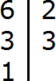
Выпишем из полученного разложения те множители, которые являются делителями числа 6. Видим, что это множители 2 и 3. Они будут следующими делителями числа 6. Допишем их к нашим делителям:
1, 2, 3
Теперь найдём все возможные произведения простых множителей числа 6. В данном случае имеется только одно произведение, а именно 2 × 3. Это произведение равно 6. Допишем число 6 к нашим делителям:
1, 2, 3, 6
Таким образом, делителями числа 6 являются числа 1, 2, 3, 6.
Задания для самостоятельного решения
Показать решение
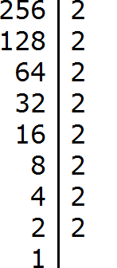
Показать решение
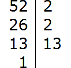
Показать решение
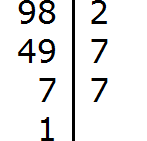
Показать решение
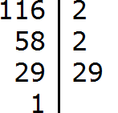
Показать решение
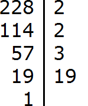
Понравился урок?
Вступай в нашу новую группу Вконтакте и начни получать уведомления о новых уроках